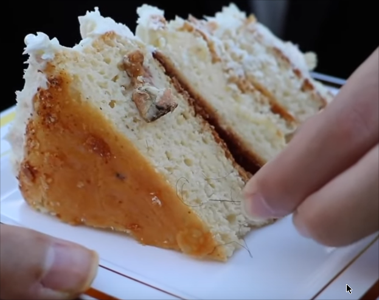

Human Cake

A one in a lifetime delicacie
This cake was made in 08/03/2016, one year after the Hair Cake.
Filthy Frank together with Idubbbz and Maxmoefoe, bring all of their expersite that they
accumulated along the years to make the ultimate cake. The Human Cake.
Ingredients
- 6 eggs
- 1 cup of butter
- 4 cups of milk
- 2 packs of cake mix
- 2 cigarettes butt
- 2 spits
- 1 cup of JoeySalads piss
- 1 slice of an eaten banana by JonTron
- A pinch of Jacksepticeye's pubic hair
- 4 toenails from makemebad35
- 10 toenails from Anthony Fantano
- A pinch of KSI's pubic hair
- A pinch of PewDiePie's butt hair
- 5 spits from VSauce
Steps
- The hardest part of making this cake is having access to those exotic ingredients.
in case you do not have access to them, you can replace with yours
- Place all of the ingredients inside of a mixer and mix all of them
- This is supposed to be a 3 layer cake, so separate the doe in three bowls
- Bring all three bowls into the oven, and wait 90 minutes
- Take the cake out, and place it on top of each other, forming a tower
- You can use icing around the cake to give it some charm
- It is ready to be served!